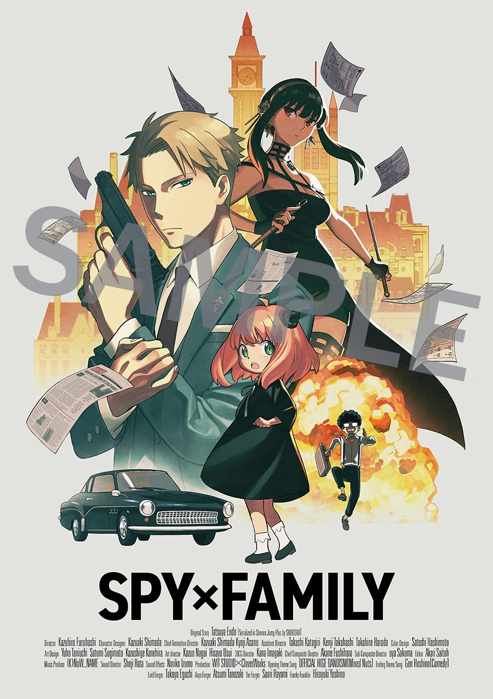
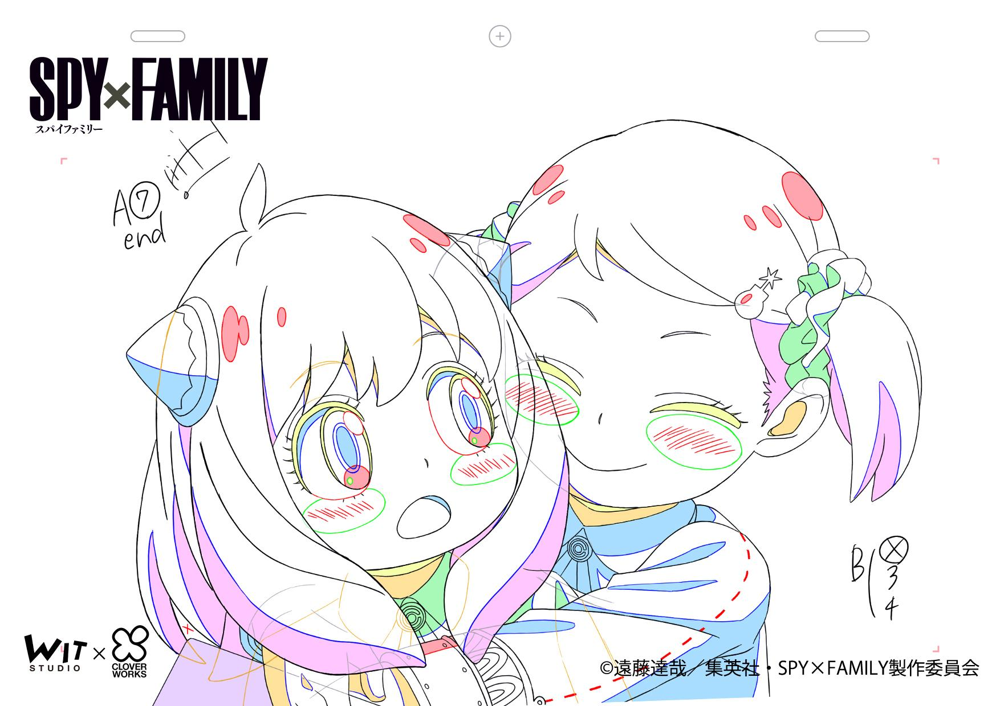

En la cuenta oficial de Twitter para la adaptación al anime de manga escrito e ilustrado por Tatsuya Endo, SPY x FAMILY, se compartieron una variedad de ilustraciones para celebrar la emisión del séptimo episodio de la serie. La primera fue publicada directamente a nombre de todo el equipo de producción
SPY x FAMILY celebra su séptimo episodio con más ilustraciones
En la cuenta oficial de Twitter para la adaptación al anime de manga escrito e ilustrado por Tatsuya Endo, SPY x FAMILY, se compartieron una variedad de ilustraciones para celebrar la emisión del séptimo episodio de la serie. La primera fue publicada directamente a nombre de todo el equipo de producción:
La producción reveló también una ilustración especial que será entregada como beneficio de adquisición de los paquetes Blu-ray/DVD en Japón.
Tal como ya se había informado previamente, WIT Studio y CloverWorks tienen la producción del proyecto dividida, por eso fueron ahora los primeros quienes publicaron distintos bocetos de animación:
